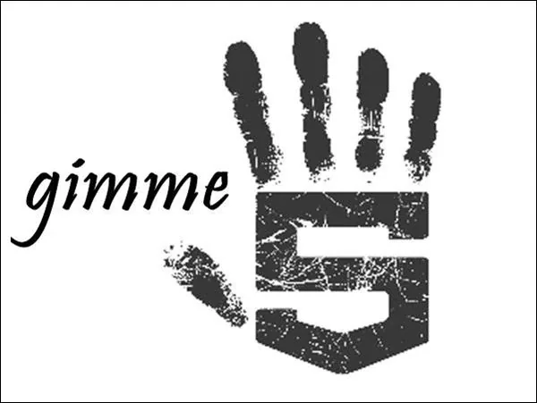
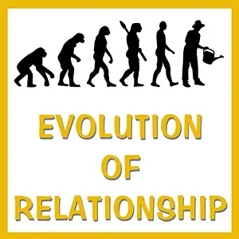

Do-Over on Strikingly
[
](https://www.imdb.com/title/tt0107048/)
WATCH THE FILM GROUNDHOG DAY... AGAIN!...
Matrix Code MOVIE136.00
Groundhog Day might be the ultimate Do-Over University. There are so many hints, clues, wise realizations, discoveries and experiments-for-living-full-out given in this timeless story with Bill Murray and Phil Groundhog.
The suggestion is to watch this film in your Possibility Team, and then make the agreement that Do-Overs are allowed in the context of your Team.
After completing this experiment, please register the Matrix Code MOVIE136.00 in your free account at StartOver.xyz. This experiment is worth 1 Matrix Point.

MAKE A DO-OVER FOR NO REASON
Matrix Code DO-OVERx.01
Do a Do-Over with someone for no reason.
Usually the reason you use to justify doing a Do-Over has to do with thinking you did something wrong, not good enough, etc. Moving from this place will twist your Do-Over into trying to make amends for the way you did it the previous time.
This is a distorted kind of rescuing where you try to rescue yourself from the 'bad karma' or try to rescue the other person from the 'negative consequences'. Then your Do-Over is not clean, not fresh.
The most effective Do-Overs have no reason contaminating their purpose. You start over from zero.
The best way to practice delivering uncontaminated Do-Overs is to do some for no reason at all, not logic, not politeness, not to apologize, not to make things better.
Doing this is easy: just do it. Do it when you think you've been absolutely clear, when you think you've really hit the bullseye on whatever you're trying to say. Make a do-over for the sheer joy of learning what else your Being wants to say.
If someone asks you why you are doing something over that you did not do 'badly' the first time, you can simply tell them: "I am doing the Do-Over Experiment number one..." It might lead to an interesting conversation.
After completing this experiment, please register the Matrix Code DO-OVERx.01 in your free account at StartOver.xyz. This experiment is worth 2 Matrix Points.
[

](http://becomeauthentic.mystrikingly.com/)
MAKE A BETTER APOLOGY
Matrix Code DO-OVERx.02
A successful apology is a fork in the road. It is a branch-point in your life, a decision after which you are no longer the same person. An apology changes who you are. After the apology you are the one who has apologized.
Yes, it is true, the other person may or may not accept your apology. They may not understand you. They may not 'forgive' for your 'sins'. The weight and truth of an apology does not rest in the hands of another person.
At the same time, an inauthentic apology has about as much value as littering or wasting other people's time. It is embarrassing to not be able to stand in your own dignity.
How can you deliver an authentic apology? There are many criteria: authentic 5-Body presence, eye contact, vulnerable connection, dropping your armor, your reasons, your justifications, getting off your position of being right, avoiding make-wrong, feeling and expressing your feelings and emotions, becoming undefended.
There are so many ways to make a weak or fake apology that this is something to take to your Possibility Team. Ask to practice making apologies with someone who role-plays the one you want to apologize to and ask the others to give you Feedback and Coaching. Listen to what they say. Make a Do-Over. Listen to what they say next time. Make a new Do-Over.
An authentic apology is the Phoenix Process, where the ashes lie dormant and cold with no guarantee that life will return to you. Then go and deliver an Authentic Apology.
After completing this experiment, please register Matrix Code DO-OVERx.02 in your free account at StartOver.xyz. This Experiment is worth 2 Matrix Points.
[

](http://proposals.mystrikingly.com/)
MAKE A BETTER PROPOSAL FOR INTIMACY
Matrix Code DO-OVERx.03
Scan your experience for someone with whom you would like to collaboratively experience more intimacy in one of your 5 bodies:
Intellectual intimacy - more intense, explorative conversations into what is possible with clarity and elegance
Physical intimacy - more co-activities doing things together in the physical world of building, making, cleaning, repairing, changing things and going places
Emotional intimacy - deeper exchange of present feelings and emotions safely communicated and heard
Energetic intimacy - expanded co-created adventure experiments in the same context
Archetypal intimacy - resonance and exuberation from alignment of archetypal creating
Go to someone with whom you have made an offer before which they did not accept and make a Do-Over of your Proposal.
After completing this experiment, please register the Matrix Code MOVIE136.00 in your free account at StartOver.xyz. This experiment is worth 1 Matrix Point.
After making your Do-Over Proposal, please register Matrix Code DO-OVERx.03 in your free account at StartOver.xyz. In the Proof section, please write what the Do-Over Proposal was for. This Experiment is worth 2 Matrix Points.
[

](http://commitment.mystrikingly.com/)
COMMIT TO A DO-OVER BEFORE YOU KNOW HOW
Matrix Code DO-OVERx.04
There is this idea that if you know how to do something, then it will come out right each time...
How true is that idea in reality?
Watch plants for a while. Study the subtle behavior of animals, insects, children. Do they succeed because they know how? Or do they succeed because they keep trying every-which-way they can figure out over and over again?
One factor in successful accomplishment is commitment without assurance, commitment before you know how.
This Experiment is three times this week to commit to a Do-Over before you know what your Do-Over might look like. You do not know what you will say. You do not know how it should go. All you know is that you are committed to make the Do-Over at your best possible effort.
Do three in a row like this. Commit first. Then make the Do-Over. Move your lips before you know what words will come out of your mouth. Make the arrangements without rehearsing the scene in your mind. Begin with the Do-Over action even if you do not feel bold or daring or certain.
After completing this experiment, please register the Matrix Code DO-OVERx.04 in your free account at StartOver.xyz. This experiment is worth 2 Matrix Points.

GIMME 5
Matrix Code DO-OVERx.05
Gimme 5 is a practice you can take on to reconnect to the vast resource of not knowing and to unleash your nonlinear possibility intelligence.
The practice is simple: each time there is a request for an idea or a proposal, either from someone else or from your circumstances, do not stop after you think up one possibility. Instead keep going and deliver five offers or possibilities, each as different from the other as can be.
At school your mind was trained to find the 'one right answer' - which, of course, is the answer your teacher holds in their mind as the 'one right answer' - and then you can stop thinking. Why bother to keep thinking if you have already found the one and only true and right answer, right?
Well, guess what? There are actually an unlimited number of possible right answers. If you let your scanner keep scanning, your scooper keep scooping, your antenna keep receiving signals from your Archetypal Lineage and your Bright Principles, and the Vast Unknown and your Imagination and the Earth Coincidence Control Office (E.C.C.O.) etc... you can actually keep going for a long time. You could actually come up with five-hundred answers and possibilities for each request... but Gimme 5 only asks you to come up with five.
(I'll let you in on a secret... I just did the Gimme 5 Practice to create these five Experiments for this Do-Over website! It really works!)
After completing this experiment, please register the Matrix Code DO-OVERx.05 in your free account at StartOver.xyz. This experiment is worth 2 Matrix Points.
[

](https://becomeanexperimenter.mystrikingly.com/)
DO 10 DO-OVERS IN A SINGLE CONVERSATION
Matrix Code DO-OVERx.06
Do-vers are an excellent tool for breaking script. All of us have a script that we generally follow. Someone says "Thank you," and the automatic reaction is "You're welcome." Someone sneezes and you say "Bless you" before even thinking about it.
In this experiment, break the script. When you find yourself communicating in an ordinary way, stop immediately and ask for a Do-Over. And then another one. And then another one. And then another one. Each time you find yourself slipping back into ordinary relating, or for absolutely no reason at all, make another Do-Over.
After completing this experiment, please register the Matrix Code DO-OVERx.06 in your free account at StartOver.xyz. This experiment is worth 2 Matrix Points.
[
](http://parts.mystrikingly.com/)
MAKE DO-OVERS FROM DIFFERENT IDENTITIES
Matrix Code DO-OVERx.07
Your identity is not solid. In fact, you have hundreds of different identities inside of you at any given time. These are your Parts, and they are not good or bad, but we have tendencies to let some speak and silence the others.
Try this experiment with your Possibility Team. Give your team members the job to follow their impulses and to stop you by saying "Switch" every so often. Please note: this experiment is not a Gremlin feeding ground. For this experiment to work, Gremlins must be leashed.
Every time you hear "Switch", make a Do-Over. Tell the story again from a different part. How would your Warrioress tell this story? What does your Guardian have to say about this? Have one of your teammates take notes.
After completing this experiment, please register the Matrix Code DO-OVERx.07 in your free account at StartOver.xyz. This experiment is worth 2 Matrix Points.
[

](http://speakfromtheunknown.mystrikingly.com/)
ACCESS THE UNKNOWN THROUGH DO-OVERS
Matrix Code DO-OVERx.08
This experiment requires your Possibility Team And a timer.
You will speak for ten minutes. Every thirty seconds, one of your Team members will say "Do-Over" and you will start again.
The purpose of this experiment is to practice speaking from the Unknown. After three or four Do-Overs, your Box and Gremlin will run out of things to say and you will be able to speak from a place of pure Creative force. Isn't that great?!
After completing this experiment, please register Matrix Code DO-OVERx.08 in your free account at StartOver.xyz. This experiment is worth 2 Matrix Points.

OFFER A NEW CONTEXT OF RELATING
Matrix Code DO-OVERx.09
All relationships are built on certain agreements. In Modern Culture, it may be that your agreements are that the man goes out and earns the money and the woman stays home to raise the kids.
It may be that you let your partner kiss you when you don't really want it, or maybe you withhold information from your partner to punish them.
This experiment is to recontext your relationship in Radical Responsibility and take a stand for a new way of relating with your partner. This is how it goes:
Step One: Distill What You Want
Ask your Possibility Team to hold space for you. Let your Concious Anger (archived — not captured) speak and from that space, say what it is you really want in this relationship.
Step Two: Make a Do-Over
Go to your partner and ask for a Do-Over. Tell them that you are no longer interested in relating to them in this old way and propose a totally new context for relating. Tell them that you are done with kissing them when you don't really want to or that your days of withholding yourself from them are over. Make new agreements and define for yourself the relationship you really want to be in.
After completing this experiment, please register the Matrix Code DO-OVERx.09 in your free account at StartOver.xyz. This experiment is worth 3 Matrix Points.
[

](https://radicalaction.mystrikingly.com/)
WEEK OF ONE THOUSAND DO-OVERS
Matrix Code DO-OVERx.09
This experiment is radical and best done in a group Like a Bridge House or similar setting.
It starts out with one week of your choosing. In this week, you make a commitment to 1,000 Do-Overs. If you are doing this experiment alone, 150 Do-Overs a day. If you are on a team, split up between yourselves and GO!
Keep your Beep! Book on hand to keep tally of all of your Do-Overs. At the end of each day, add the day's tallies a big piece of paper in your living room so you can see just how far you've come.
The purpose of the experiment is to take the script of Normal communication and rip it to shreds. What happens when you stop relying on one way of communicating with the people in your life? What becomes available when you open yourself to the awesome power of the Unknown?
After completing this experiment, please enter the Matrix Code DO-OVERx-10 in your free account at StartOver.xyz. This experiment is worth 9 Matrix Points.